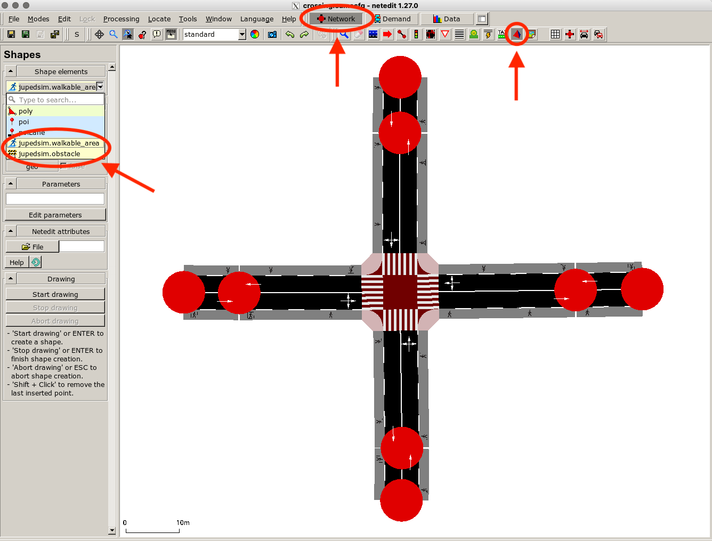
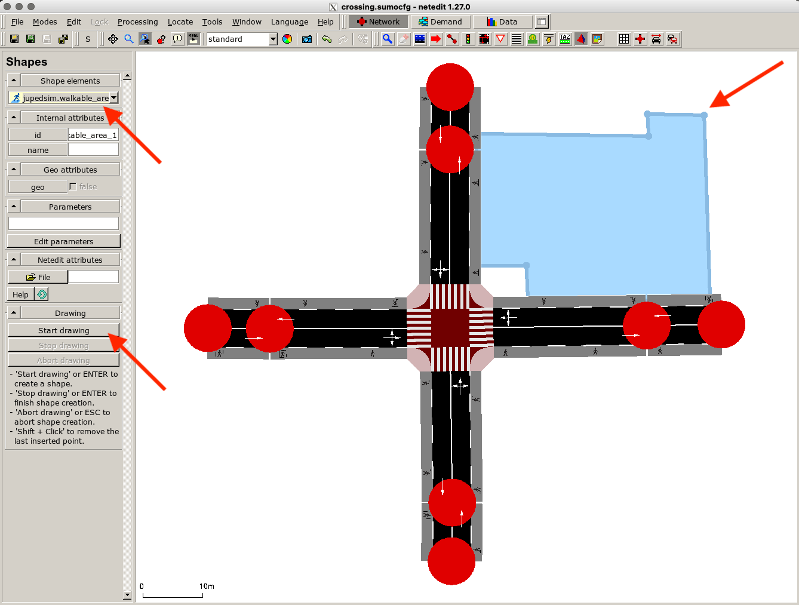
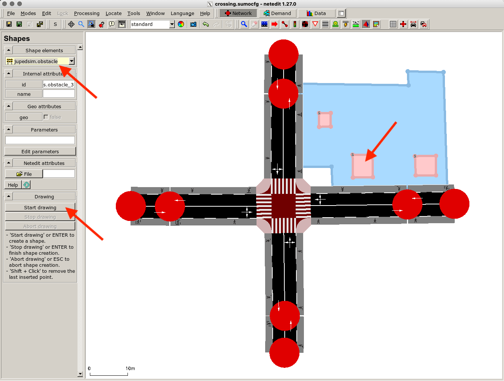
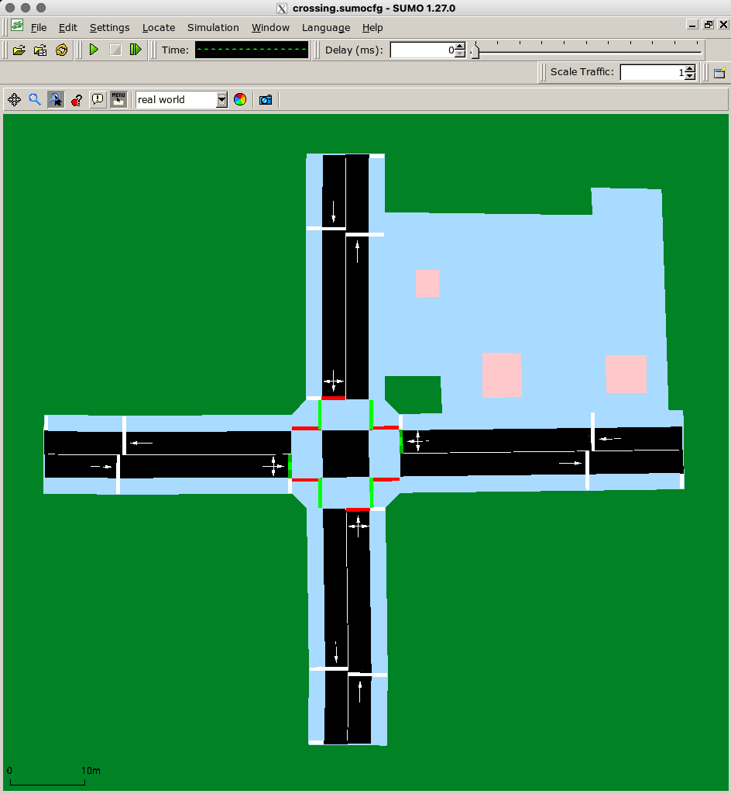
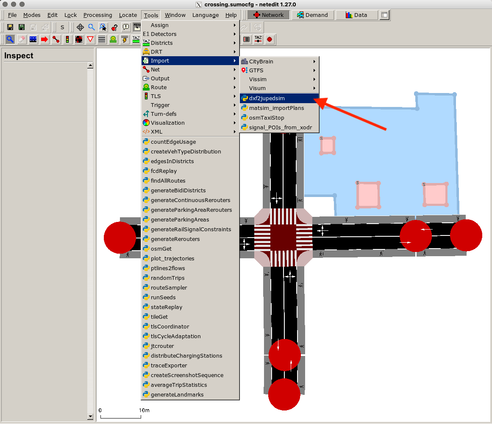
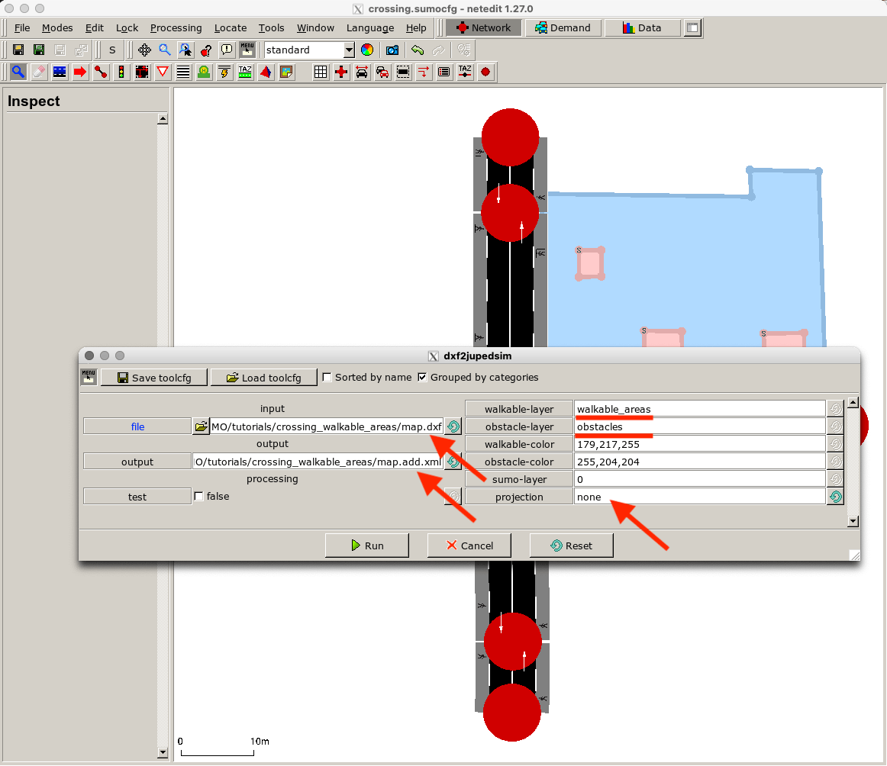
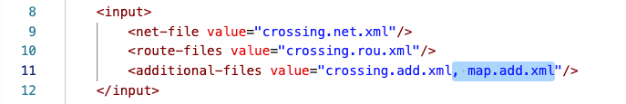
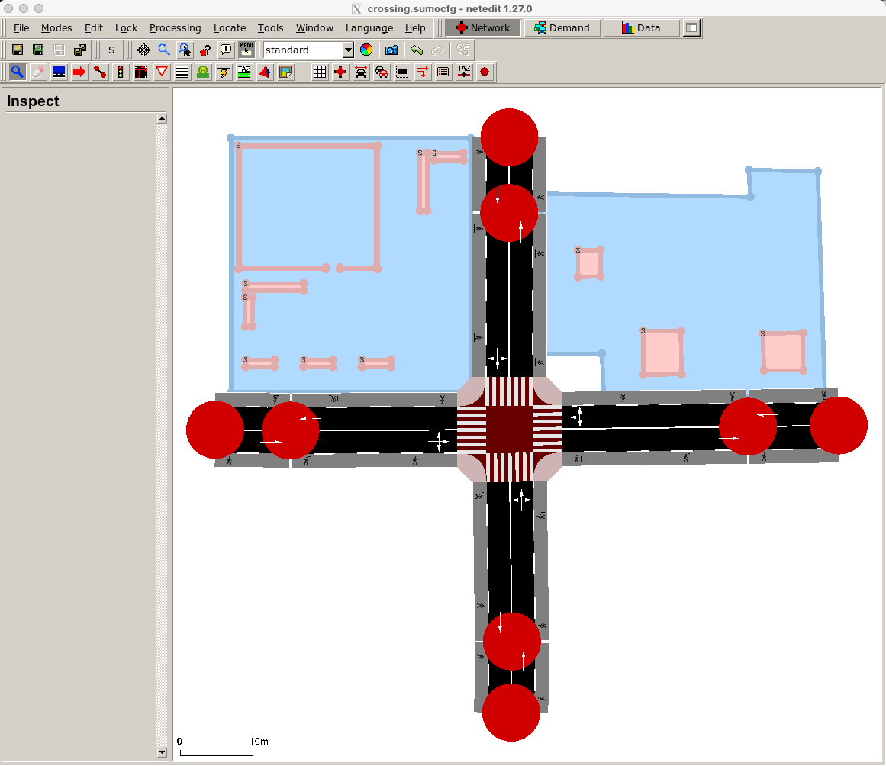
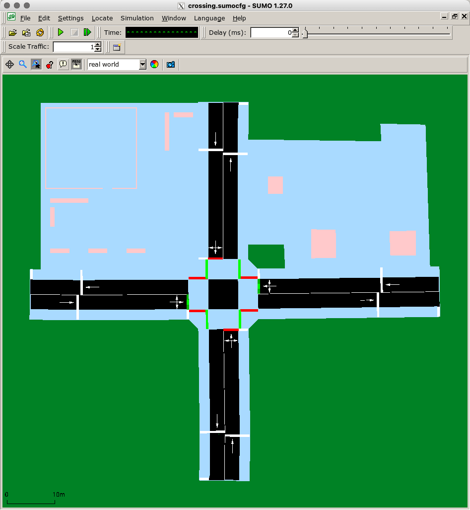

This tutorial demonstrates the different possibilities to define 2D walkable areas in SUMO that are accessible for JuPedSim agents. We use the configuration files of the crossing tutorial and add additional 2D walkable areas by drawing polygons in netedit and by importing a dxf file.
You can find the used dxf file and the resulting configuration files for this tutorial here.
Configration Options#
There are three different ways to define 2D walkable areas for SUMO-JuPedSim:
- Automatic generation of a walkable area based on pedestrian network elements in SUMO. This approach was already demonstrated in the crossing tutorial. SUMO automatically parses sidewalks, footpaths and crossings to a 2D space, if JuPedSim is chosen as pedestrian model for the simulation scenario.
- Drawing of walkable area and obstacles in netedit
- Parsing a dxf file containing the walkable area and obstacles to an additional-file (xml) and importing it in SUMO.
Drawing in netedit#
Start netedit and load the sumoconfig file from the crossing tutorial. When you are in the Network supermode activate the Polygon mode. In the Shapes menu on the left side, you can see a list of available shape elements including JuPedSim elements: walkable area and obstacles.

Select jupedsim.walkablk_area and click on Start drawing. Draw the walkable area and press Enter to close the polygon and finish the drawing.

You can also draw obstacles the same way using the element type jupedsim.obstacle.

When you open sumo-gui you can see that the walkable areas generated from the network and the drawn one have been merged (light blue area). Obstacles are shown in light pink.

Note
While overlapping areas (with SUMO network) are merged – make sure that obstacles to not block the SUMO network elements! Agents cannot reroute when moving on an SUMO edge.
Import dxf File#
It’s also possible to import a dxf file containing a detailed map of pedestrian facilities into netedit. The dxf file must consist of two layers: a layer with one polygon of the walkable area und another layer containing the polygons for the obstacles. All polygons must be simple and closed. You can download an example dxf file here. To parse the dxf file to an xml file which SUMO can process use the script via Tools > Import > dxf2jupedsim.

Choose the input file and the name of the output file. Set projection to none as the given example is not a georeferenced map. If you use your own file, change the name of the layers according to your dxf file.

Note
When choosing the dxf file in file finder select the file name ending All files(\)* as only xml files are listed by default.
Note
Make sure to select the desired output path. Otherwise, the file is stored at the directory from which netedit is being executed.
Click Run and check the console output. If the processed is finished the additional-file should have been created in the selected folder. Now you need to add the generated file to the SUMO configuration. You can do that via the SUMO options menu or by editing the sumoconfig file manually:

Restart netedit and load the new sumoconfig file. You can see a second walkable area generated from the dxf file.

Note
If some obstacles are not shown, make sure that they are on a visible layer. You can edit their layer in the add.xml file.
To inspect the complete walkable area used for the simulation we open sumo-gui. When configuring routes for JuPedSim agents that use different walkable areas (both user-defined and those automatically generated from the network), there are a few rules to bear in mind which are described in the next tutorial (to be released soon).
